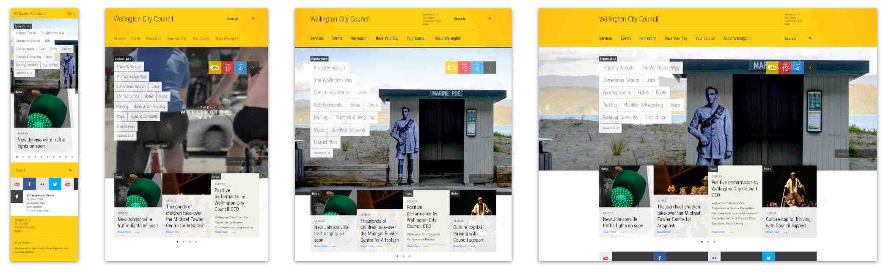

CSS Fundamentals & Intro to RWD
Fluid & Flexible Web Pages
Even before adding responsive web techniques, it’s important to create fluid layouts and maintainable code beforehand to make the transitions and changes easier to handle. Let’s review some best practices and tips for creating maintainable code.
Fluid images
Use percentages to create flexible images.
img {
/* image stretches full width of its container */
width: 100%;
/* image will stretch full width of its container until it
reaches 100% width of the image file itself */
max-width: 100%;
}
Background images
So far we’ve used background for colours but it can also be used for setting background images.
/* longhand */
background-image: url(path/to/file.jpg);
/* shorthand */
background: url(path/to/file.jpg);
Files Paths & Folder Directories
project-folder
|---css (folder)
|---styles.css
|---images (folder)
|---picture.jpg
|---index.html
To find the correct file path to add a background image using CSS, the starting point is styles.css. If your folder directory looks like the above example, the steps to follow are:
- navigate up and out of the css folder (
../) - go into the images folder (
../images/) - image file name (
../images/picture.jpg)
background-image: url(../images/picture.jpg);
To navigate up and out of a folder, the syntax is always ../ to represent moving up the directory by one folder, regardless of the folder name.
background-repeat
If the image file is smaller than the element with the background image applied to it, the image will automatically repeat to fill up the space.

To keep the image from repeating, use the background-repeat property or add it to the shorthand background property.
/* shorthand */
background: url(../images/picture.jpg) no-repeat;
/* longhand */
background-image: url(../images/picture.jpg);
background-repeat: no-repeat;
background-attachment
When the page scrolls, all the content scrolls with it including the background image. Adding background-attachment: fixed; will change that.
/* shorthand */
background: url(../images/picture.jpg) no-repeat fixed;
/* longhand */
background-image: url(../images/picture.jpg);
background-repeat: no-repeat;
background-attachment: fixed;
Background-size
CSS3 introduced the background-size property which can be used to change the size. The syntax is:
background-size: width height;
The default values for width and height are auto and retains the original image dimensions. If only one value is defined, it is assumed to be the width.
There are several sizing dimensions: pixels, percentages and keywords.
background-size is the longhand property.
/* longhand */
background-image: url(../images/background-1.jpg);
background-repeat: no-repeat;
background-attachment: fixed;
background-position: 50%;
background-size: 100%;
To include it in the shorthand background property, it must be included after background-position, separated with the / character.
/* shorthand */
background: url(../images/background-1.jpg) no-repeat fixed 50% / 100%;
Important: If no background-position value is being used, background-size will not work using the shorthand syntax. In this case, it may be less error prone to add it using the longhand syntax.
background: url(../images/background-1.jpg) no-repeat fixed 50%;
background-size: 100%;
background-size also accepts keyword values, contain and cover.
containscales the image to fit its container. The image will grow or shrink proportionally, but the width and height will not exceed the container’s dimensionscoverscales the image to fit the entire container but if the container has a different aspect ratio, the image will be cropped
EXERCISE: images & background images
Download today’s exercise files (zip) and open fluid-images.html in the text editor. Uncomment each property, change some values and see what happens!
Extra Resources
Display vs Floats
In our previous lesson, we talk about inline & block elements and how to use the display property to change the behavior and make elements line up side by side or stacked. Refer to the previous lesson’s Codepen for a refresher.
float can also be used to align elements side by side as well. Refer to the previous lesson’s Codepen for a refresher.
So which one is better for page layouts?
It depends. This is widely debated among developers but both techniques come with their own quirks. Understanding how to use each technique is the key to choosing which one is right for job.
Let’s take a look at using display vs floats for styling a horizontal navigation menu.
Horizontal Navigation
Traditionally, navigation links were contained in a list like this:
Pre-HTML5
<div class="nav">
<ul>
<li><a href="#">Home</a></li>
<li><a href="#">About</a></li>
<li><a href="#">Portfolio</a></li>
<li><a href="#">Contact Me</a></li>
</ul>
</div>
HTML5
<nav>
<ul>
<li><a href="#">Home</a></li>
<li><a href="#">About</a></li>
<li><a href="#">Portfolio</a></li>
<li><a href="#">Contact Me</a></li>
</ul>
</nav>
This is another topic where there is much debate. Are lists necessary for accessibility and semantics or should links be used on it’s own? You can read more about it here and here.
To style a list navigation, first you’ll need to reset the list styles. You’ll probably also want to remove the default underline of the links.
Putting a background color on the ul will help to visually see the space the element is occupying.
Using the HTML5 markup example above, the CSS will looks like this:
nav a {
text-decoration: none; /* remove default underline */
}
nav ul {
margin: 0; /* remove default margin */
padding: 0; /* remove default padding */
list-style-type: none; /* removes default bullets */
background: red;
}
Using display, there are two values that can be used to align the list items horizontally.
inline will line up side by side but does not accept height and width values.
nav ul li {
display: inline;
}
inline-block will also display the items side by side but accepts height and width values.
nav ul li {
display: inline-block;
}
Which one is better to use?
At this point, the nav will be aligned horizonatally but could use some spacing.

Put some padding on the link, a, to make the links look less squished and improve accessibility by making the clickable area bigger. Reminder, links are inline elements by default which doesn’t render padding properly.
nav a {
text-decoration: none;
display: inline-block; /* add block behavior to use padding */
padding: 10px;
}
Use this Codepen to explore these styles before moving on.
Getting to know your options
If you put a background color on the list item, you’ll see an extra space between the elements. Here’s the quirk!
nav ul li {
display: inline-block;
background: lightblue;
}

The extra space is caused by the line break in the HTML used to put the <li> on separate lines.
If you use float instead of display, you won’t see this quirk.
nav ul li {
float: left;
background: lightblue;
}

But, float has it’s own quirks too. What happened to the red background in the ul?
Let’s tackle the display example first.
Horizontal navigation: Display
If your design does not require equal width “boxes” or you don’t mind the space, visually, then leaving this as is would work just fine. You can even add text-align: center; to automatically center align the list items containing the links.
nav ul {
text-align: center;
}
Let’s say you wanted 4 equal width boxes for the nav. You could set the list items to a width of 25%.
nav ul li {
background: lightblue;
width: 25%;
}
However, the space between the <li> tags are taking up space so the boxes won’t fit in one line.

You could be sneaky and set the width to something slightly less than 25% or use a negative margin to nudge the elements a few pixels to the left. These options will work and get close to 100% total width but to truly remove the space, here’s another fix.
nav ul {
font-size: 0; /* removes space between li elements */
}
nav ul li {
font-size: 16px; /* reset the inherited font-size */
}
Let’s go back to the previous Codepen and try this out.
Horizontal navigation: Float
When you use float to align elements, there is no extra white space to worry about. But, remember, float has it’s own quirks too. The parent of the floated elements collapse, which can cause problems too.
Suppose you had some content after the navigation? It will look like this:
See the Pen Horizontal nav & floats by Ladies Learning Code (@learningcode) on CodePen.
No worries, just remember to clear your floats! Since this example requires all the list items to float, you’ll need to self-clear the floated elements.
nav ul {
overflow: hidden;
}
(You can also use the “clearfix hack” instead of overflow.)
With float, you could set equal widths without adding additional hacks. The below snippet will work just fine.
nav ul li {
width: 25%;
}
However, text-align: center; will only center align the text within the <li> tags, not automatically center align the list items itself, like in the display example.
Let’s try these techniques out in this CodePen.
EXERCISE: Horizontal navigation
In the exercise files downloaded earlier, in the project folder, you will find a basic webpage. Using the existing HTML & CSS files, try styling the list navigation using the techniques discussed so far.
Pro tip! There is already existing CSS in the exercise so be sure to put your CSS in some kind of logical & organized order.
Remember, every HTML element is essentially just a “box” so the techniques discussed above are not limited to just navigations using a list.
CSS Position property
The position property can also be used to lay out HTML elements and has five different values: static, relative, absolute, fixed and inherit.
position is also used with a combination of box offset properties, top, right, bottom and left, to specify the direction and measurements for the positioned elements.
position: static;
- default value
- elements are not positioned at all and in the normal page flow
- offset properties are ignored
position: relative;
- has the same behaviour as
staticbut box offset properties can be applied to it - use this to nudge the element within its stacked order
position: absolute;
- can be positioned anywhere, relative to its nearest positioned ancestor element
- if no ancestor element is positioned, it will be relative to the body
- to contain the element, use
position: relativein a parent selector
position: fixed;
- positioned anywhere regardless of stacking order
- not affected by any positioned ancestor element
- always positioned to the body
- stays in place when you scroll
position: inherit;
- takes the same value as its parent
Let’s try these values in CodePen
More examples here
https://css-tricks.com/almanac/properties/p/position/
EXERCISE: Position Fixed nav
Go back to the project folder included in today’s exercise files and try to make the navigation fixed to the top of the page using
position.
Intro to Responsive Web Design
When Ethan Marcotte introduced the responsive web design approach in 2010, the idea that one website could target multiple screens got the dev community really excited.
Fluid websites are not new. Using percentage based widths in the base CSS will make the page fluid as the page is resized. Responsive techniques take it a step further and is used to rearrange and restyle elements based on the device’s screen size using media queries.
mediaqueri.es houses a collection of responsive websites. Take a look at a few sites and see how the layouts change when the browser window size changes.

Prior to responsive and mobile web designs, the rule of thumb was to optimize for the most common resolution (1024px x 768px or 1280px x 1024px).
If a mobile version was required, a separate website was created, often under a sub-domain (ex. m.mysite.com). It would have its own design and code base separate from the desktop version.
While responsive web design has become a popular standard, a separate mobile site may still be the best option for content heavy sites that require more simplicity for mobile or a layout for mobile users that goes beyond shifting and scaling content.
Viewport Meta Tag
The viewport meta tag is required in the <head> of the HTML document to ensure that the page responds on mobile devices.
If you forget to include this tag, it will not render properly on a mobile device.
<meta name="viewport" content="width=device-width, initial-scale=1.0">
name=”viewport”differentiates it from other meta tagsviewportgives the browser information about the sizing abilities of the sitecontentprovides info about the viewport, separate key value pairs with a commawidth=valuesets the width of the web pageinitial-scaleis the zoom value at which the site is zoomed in/out by defaultuser-scalable=no(not shown in example tag above) will limit users from being able to zoom inminimum-scale, maximum-scalewill limit how far in or out a user is allowed to scale/zoom
Media queries
Media queries allows you to apply CSS to your document only when the screen has reach a certain size (also referred to as a breakpoint).
Basic media query:
@media (max-width: 940px) {
/* CSS for that screen size goes here */
}
The above example targets a browser with the maximum width of 940px (anything equal or less than 940px).
All rules for a specific screen size is required to be nested within the media query.
@media (max-width: 940px) {
body {
background: red;
}
h2 {
font-size: 20px;
}
}
You can also use min-width in media queries.
@media (max-width: 940px) {
/* any screen 940px and below */
}
@media (min-width: 941px) {
/* any screen 941px and above */
}
Why do you think 941px was used for min-width instead of 940px?
To limit the CSS to a range of pixel values, use a combination of min-width and max-width. This can be helpful when targeting a specific screen size and is best used to contain a particular style just within range.
@media (min-width: 768px) and (max-width: 940px) {
}
The above media query will only be applied when the width of the browser is greater or equal to 768px and less or equal to 940px.
Height
Most responsive techniques target width but it is possible to target device heights.
@media (min-height: 568px) {
/* anything as high or higher than the iPhone 5 */
}
Height and width can also be used together in the media query:
@media (min-height: 568px) and (min-width:320px) {
/* anything as high or higher than the iPhone 5 */
}
Note: Relying on height-based media queries can be inconsistent and most of the time, it’s better to let the content flow downward as the width of the device gets smaller.
Common breakpoints
320px — Mobile portrait
480px — Mobile landscape
600px — Small tablet
768px — Tablet portrait
940px - 1024px — Tablet landscape, netbook, small desktop
1280px & greater — Desktop
These are just general guidelines. There are no hard and fast rules. Depending on the design and the scope of the project, you may need to target different resolutions and add media queries at different breakpoints. A responsive design should however, have at least 2-3 breakpoints to optimize for mobile phones, tablets and desktops/laptops.
EXERCISE: Basic Media queries
In the exercise folder, open media-queries.html in your editor.
In the
<head>section, a media query has already been included. Add 2 more media queries to target mobile and tablet. Change the background color and test it to make sure it works!Bonus: Try using
min-widthor a combination ofmin-andmax-widthto create a range.
RWD Best Practices
It’s best practice not to use too many breakpoints. Two to four should be fine. Up to six as an absolute max but if you find that you have two media queries that are close, see if you can move the styles to one or the other instead of creating another breakpoint.
When writing media queries and adding responsive changes, only add the specific CSS property that needs to be changed. Do not repeat styles.
.wrapper {
max-width: 1140px;
font-family: helvetica, arial, sans-serif;
background: white;
padding: 20px;
}
@media (max-width: 940px) {
.wrapper {
max-width: 900px;
padding-top: 10px;
}
}
Testing Mobile in the Browser
When creating mobile friendly sites, it’s always best to test on an actual device. However, there are a lot of interesting tools available to allow us to test in the browser.
Chrome has an emulator built right into the dev tools!

There are also many many other tools, free and paid, available for testing and emulating multiple devices and device sizes.
EXERCISE: Responsive Web page
Let’s go back to the webpage contained in the project folder in today’s exercise files and make the Portfolio section fluid and responsive.
Bonus! Resize the browser to different sizes and see what else you could change!
~ End ~